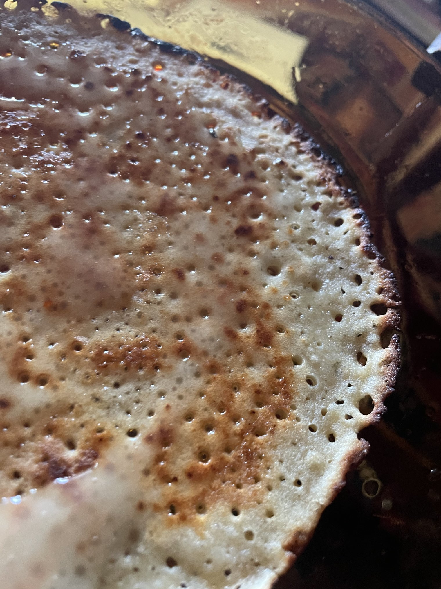

Crepes de harina de mijo y arroz
Ingredients
2×
- 0.5 taza de harina de mijo
- 0.5 taza de harina de arroz
- 2 huevos
- 1 pizca de azúcar
- 1 taza de leche de almendra
- aceite o mantequilla

Preparación
Paso 1
Mezclar 0.5 taza de harina de mijo, 0.5 taza de harina de arroz, 2 huevos y 1 pizca de azúcar. Añadir poco a poco 1 taza de leche de almendra y batir hasta obtener una masa líquida sin grumos.
Paso 2
Calentar una sartén con un poco de aceite o mantequilla, verter un cucharón de masa y extenderla.
Paso 3
Cocer 1-2min por cada lado, hasta que esté dorada.